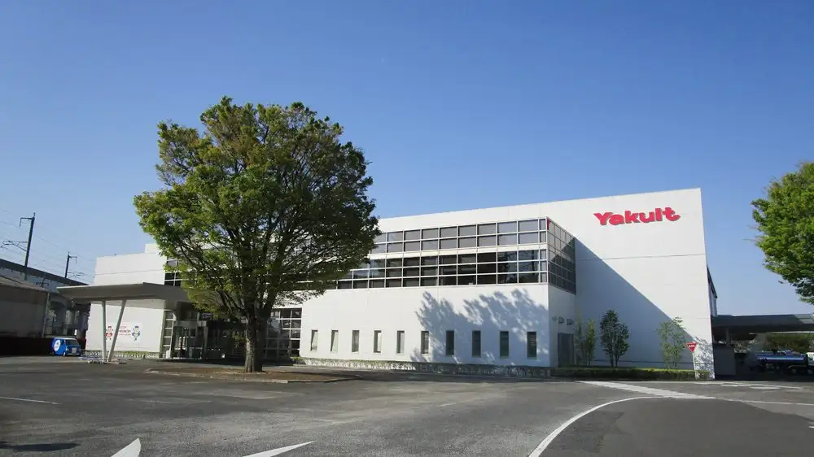
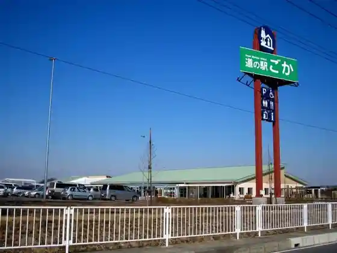
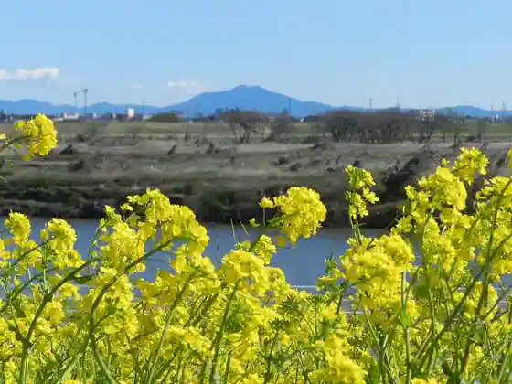
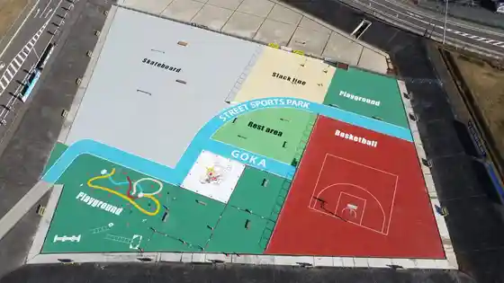

Japan / Ibaraki / Goka
Goka, Ibaraki
Goka · Ibaraki
Goka
Highlighted on the Ibaraki map.

Sights
Roadside Station Goka
Goka, Ibaraki · Official / source link

Naka no Shima Park
Goka, Ibaraki · Official / source link

(Kabu) Yakuruto Honsha Ibaraki Kojo
Goka, Ibaraki · 0280-84-2121 · Official / source link
Kyupii (Kabu) Goka Kojo
Goka, Ibaraki · Official / source link
Street sports park GOKA
Goka, Ibaraki · Official / source link

Rajikon Park Goka
Goka, Ibaraki · Official / source link
Domu Park
Goka, Ibaraki · Official / source link
Some Q Teku no Rojii (Kojokengaku)
Goka, Ibaraki · Official / source link
Sekiyado Suiko Mon
Goka, Ibaraki · Official / source link
Hakuren no Dai Janpu !
Goka, Ibaraki · Official / source link